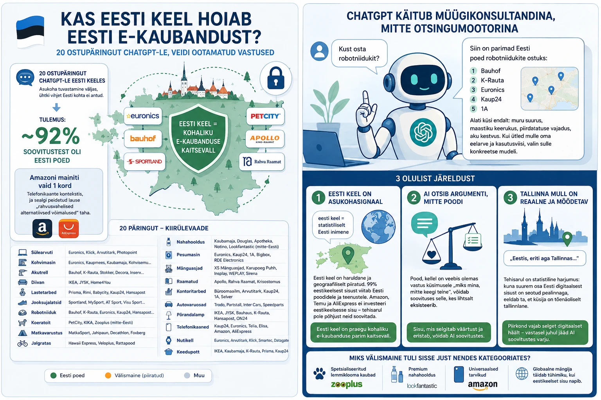

AINO (AI Nähtavuse Optimeerimine) on eestikeelne termin, mis hõlmab kõike seda, mida rahvusvaheliselt tuntakse GEO (Generative Engine Optimization) ja AEO (Answer Engine Optimization) nime all – ehk kuidas saada nähtavaks just tehisaru vastustes, mitte ainult Google'i otsingus. Selle distsipliini põhitõdedest saab lähemalt lugeda meie suurest AI nähtavuse optimeerimise juhendist.
Eelmine nädal istusin lõpuks maha ja esitasin endale küsimuse, mis oli mul juba tükk aega peas tiirutanud: kas globaalsed hiiud nagu Amazon ja Temu söövad Eesti e-kaubanduse välja ka tehisaru ajastul, või on meil mingi kaart varuks, millest meil endil veel aimugi pole?
Tegin eksperimendi, mis on osa suuremast AINO uuringust Eesti e-kaubanduse seisust. Esitasin ChatGPT-le 20 täiesti argist ostupäringut eesti keeles — sülearvutist koeratoidu ja keedupotini. Asukoha tuvastamine oli välja lülitatud. Ühtegi vihjet Eesti kohta ma ise ei andnud.
Ootasin, et vähemalt pooled vastused viivad Amazoni, Temu või AliExpressi lehele. Juhtus aga hoopis teisiti.
Tulemus: ~92% soovitustest olid Eesti poed.
Peaaegu kõikides vastustes soovitas ChatGPT Eesti kohalikke brände: Euronics, Bauhof, Arvutitark, Sportland, Rahva Raamat, PetCity, Apollo ja teised tuttavad nimed. Amazoni mainiti vaid üks kord. Telefonikaante kontekstis, ja sealgi oli ta peidetud lause "rahvusvahelised alternatiivsed võimalused" taha.
Allolev tabel annab kiire ülevaate 20 päringust:
| Päring | ChatGPT soovitused |
|---|---|
| Sülearvuti | Euronics, Klick, Arvutitark, Photopoint |
| Kohvimasin | Euronics, Kaupmees, Kaubamaja, Kohvisemu, Kohvieri, KAFO |
| Akutrell | Bauhof, K-Rauta, Stokker, Decora, Inserv, Toolmarket |
| Diivan | IKEA, JYSK, Home4You |
| Lastetarbed | Prisma, Rimi, Babycity, Kaup24, Hansapost |
| Jooksujalatsid | Sportland, MySport, AT Sport, Visu Sport, POPsport |
| Robotniiduk | Bauhof, K-Rauta, Euronics, Kaup24, Hansapost, 1A |
| Koeratoit | PetCity, KIKA, Zooplus (märgitud: mitte-Eesti) |
| Matkavarustus | MatkaSport, Jahipaun, Decathlon, Foxberg |
| Jalgratas | Hawaii Express, Veloplus, Rattapood |
| Nahahooldus | Kaubamaja, Douglas, Apotheka, Notino, Lookfantastic (mitte-Eesti) |
| Pesumasin | Euronics, Kaup24, 1A, Bigbox, RDE Electronics |
| Mänguasjad | XS Mänguasjad, Karupoeg Puhh, Insplay, WEPLAY, Sirena |
| Raamatud | Apollo, Rahva Raamat, Krisostomus |
| Kontoritarbed | Büroomaailm, Arvutitark, Kaup24, 1A, Selver |
| Autovaruosad | Trodo, Partstall, Inter Cars, Speedparts |
| Põrandalamp | IKEA, JYSK, Bauhaus, K-Rauta, Hansapost, ON24 |
| Telefonikaaned | Kaup24, Euronics, Telia, Elisa, Amazon, AliExpress |
| Nutikell | Euronics, Arvutitark, Klick, Smartec, Datagate |
| Keedupott | IKEA, Kaubamaja, K-Rauta, Prisma, Kaup24 |
Kolm olulist järeldust
1. Eesti keel on AI-filtri silmis asukohasignaal
Asukoht oli välja lülitatud, kuid ChatGPT käitus nagu teaks ta täpselt, et küsija asub Eestis. Põhjus on tõenäoliselt lihtne: eesti keel on maailma mõistes nii haruldane ja geograafiliselt piiratud, et see toimib automaatse asukohasignaalina. Kuna 99% eestikeelsest veebisisust viitab Eesti poodidele ja teenustele, järeldab tehisaru loogiliselt, et see inimene on Eestis.
Amazon, Temu ja AliExpress ei investeeri eestikeelsesse sisuturundusesse. Ja kui neil ongi mingil määral tootesisu eesti keeles, siis ainult AI toodanguna või lihtsalt tõlkena. Seega pole nende "digitaalne jalajälg" eesti keeles praktiliselt olemas. Tehisarul pole põhjust neid soovitada.
AINO järeldus: Eesti keel on praegu kohaliku e-kaubanduse parim kaitsevall globaalse konkurentsi vastu tehisaru otsingutes. See ei ole plaan ega strateegia. See on tegelik olukord.
2. AI käitub müügikonsultandina, mitte otsingumootorina
Suurim üllatus ei olnud see, keta soovitati, vaid see, kuidas soovitati. ChatGPT ei andnud lihtsalt nimekirja, ta struktureeris vastuse nagu kogenud müügikonsultant: selgitas kategooriate erinevusi, tõi välja hinnaklasside loogika ja lõpetas alati küsimusega "kui ütled mulle su eelarve ja kasutusviisi, valin sulle konkreetse mudeli."
See tähendab midagi väga olulist AINO perspektiivist: tehisaru ei otsi poodi, vaid argumenti. Pood, kellel on veebis olemas vastus küsimusele "miks mina, mitte keegi teine", võidab soovituses selle, kes lihtsalt eksisteerib. Seda uut loogikat ja selle seost otsinguturunduse muutustega lahkasin loos: SEO on surnud? Ei - aga reeglid on muutunud.
3. Tallinna mull on reaalne ja mõõdetav
Kuues vastuses 20-st lisas ChatGPT automaatselt kaardi. Ja kõikidel nendel kaartidel oli fookus Tallinnal. Iseloomulik fraas ilmus ikka ja jälle: "Eestis, eriti aga Tallinnas..."
Samas küsiti lihtsalt "kust osta" — mitte "kust Tallinnas osta". Tehisarul on statistiline harjumus: kuna suurem osa Eesti digitaalsest sisust, e-poodide pressiteadetest ja foorumitest on seotud pealinnaga, eeldab ta, et küsija on tõenäoliselt tallinnlane.
AINO järeldus: Kui su äri asub Tartus, Pärnus, Narvas või Viljandis, oled sa tehisaru soovituste vaatest ohus. Mitte seetõttu, et sind pole olemas, vaid seetõttu, et sa pole piisavalt häälekas digitaalses ruumis oma asukohaga seoses.
Miks välismaine tuli sisse just nendes kategooriates?
Neli välismaise soovituse juhtu (Zooplus, Lookfantastic, Amazon, AliExpress) ei olnud juhuslikud. Kõik need kattusid kategooriatega, kus eestikeelset spetsiifilist sisuturundust on vähe: spetsialiseeritud lemmiklooma kaubad, premium nahahooldus, universaalsed tarvikud.
ChatGPT ei soovita välismaist seetõttu, et see oleks "parem". Ta täidab tühimiku. Kui eesti keeles pole piisavalt sisu, mis vastaks konkreetsele otsinguvajadusele, astub sisse globaalne mängija, kellel on maailma mõistes tugev digitaalne jalajälg.
Mida see tähendab Eesti ettevõtjale?
Tehisaru otsingud (ChatGPT, Perplexity, Google AI Overviews) muutuvad üha enam esmaseks otsingukanaliks ja seda eriti noorema generatsiooni hulgas. See on uus maastik, kus kehtivad teised reeglid kui traditsioonilises SEOs. Siin on kolm asja, mida soovitame kohe tähele panna ja rakendada ka meie praktilises checklistis AI-vastustesse jõudmiseks:
- Eestikeelne sisu ei ole ainult turundus: See on nähtavuse vundament tehisaru ajastul. Masintõlgitud tootekirjeldused ei loe.
- Google Business Profile korrashoid on baasvundament: ChatGPT tõmbas reaalajas kaardirakendustest telefoninumbreid ja lahtiolekuaegu — aegunud info kuvatakse tehisaru soovitustes otse.
- Piirkondlik asukoht vajab selget digitaalset häält: "Parimaj jalgrattateed Tartus", "kohvikud Pärnu vanalinnas" — sellist tüüpi kontekstuaalne sisu on see, mis lõhub Tallinna mulli.
ChatGPT vestluste lingid
Kõik 20 reaalselt tehtud ChatGPT vestlust on lingitud allpool. Kellel tekib huvi, saab ise järele vaadata, kuidas masin käitus:
- 1. Ostupäring: Sülearvuti testvestlus →
- 2. Ostupäring: Kohvimasin testvestlus →
- 3. Ostupäring: Akutrell testvestlus →
- 4. Ostupäring: Diivan testvestlus →
- 5. Ostupäring: Lastetarbed testvestlus →
- 6. Ostupäring: Jooksujalatsid testvestlus →
- 7. Ostupäring: Robotniiduk testvestlus →
- 8. Ostupäring: Koeratoit testvestlus →
- 9. Ostupäring: Matkavarustus testvestlus →
- 10. Ostupäring: Jalgratas testvestlus →
- 11. Ostupäring: Nahahooldus testvestlus →
- 12. Ostupäring: Pesumasin testvestlus →
- 13. Ostupäring: Mänguasjad testvestlus →
- 14. Ostupäring: Raamatud testvestlus →
- 15. Ostupäring: Kontoritarbed testvestlus →
- 16. Ostupäring: Autovaruosad testvestlus →
- 17. Ostupäring: Põrandalamp testvestlus →
- 18. Ostupäring: Telefonikaaned testvestlus →
- 19. Ostupäring: Nutikell testvestlus →
- 20. Ostupäring: Keedupott testvestlus →
Lõpetuseks
Eesti keel on osutunud millekski, milleks seda e-kaubanduses tavaliselt ei peeta: kaitsemüüriks. Mitte seetõttu, et keegi nii otsustas, vaid seetõttu, et tehisaru maailmas tähendab väike keel väikest konkurentsi. Ja väike konkurents tähendab suuremat nähtavust neile, kes sisu loovad.
Aga see eelis ei ole igavene. Tõlketehnoloogia areneb. Globaalsed platvormid hakkavad investeerima kohalikesse turgudesse. Aken on praegu veel lahti. Küsimus on, kes selle hetke ära kasutab.
Kas Sinu bränd on AI vastustes olemas?
Ära jäta oma ettevõtte tulevikku juhuse või konkurentide otsustada. Vaatame Sinu veebilehe AI-nähtavusele otsa ja paneme paika reaalse tegevuskava.
Broneeri tasuta konsultatsioon →Feliks Stavitski on digitaalturunduse konsultant ja AINO (AI Nähtavuse Optimeerimine) mõiste ellu kutsuja Eestis. Ta aitab Eesti ettevõtetel muutuda nähtavaks ka AI-põhistes otsisüsteemides.